Project 3 — Fun with Flow Models
Part A: Exploring the Power of Flow Models
In this project, I explored image generation and editing using flow matching. Instead of training a model from scratch, I used the pretrained PixNerd-XXL-P16-T2I model to investigate how images can be generated by following a learned velocity field from Gaussian noise to a clean image.
I started by visualizing noisy training inputs and comparing different denoising methods. I then implemented Euler sampling and classifier-free guidance, before using these techniques for image-to-image editing, text-guided editing, visual anagrams, and hybrid images.
Throughout the project, I used 512 × 512 images and Euler integration with a step size of 0.02. For guided generation, I used a classifier-free guidance weight of 7.
1. Visualizing Training and Sampling
Flow matching learns a velocity field that describes how to transform samples from a simple distribution, such as Gaussian noise, into samples from the image distribution. Given a clean image x1 and Gaussian noise ε, we construct intermediate images using linear interpolation:
At t = 0, the image is pure noise, while at t = 1, it is the original clean image. The corresponding target velocity is x1 - ε. The pretrained model predicts this velocity from the current image, timestep, and text condition.
1.1 Constructing Noisy Training Inputs
I implemented linear interpolation between a clean image and a fixed Gaussian noise tensor. For this experiment, I used my own photograph of orange jellyfish against a blue underwater background.
I reused the same noise tensor at t = 0.25, 0.50, and 0.75, allowing me to directly compare the effects of changing the interpolation timestep.
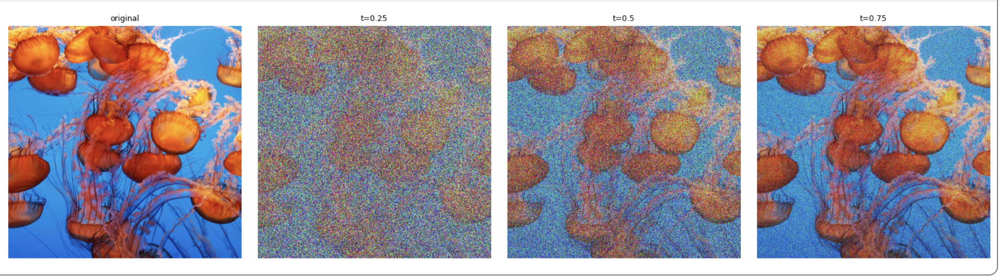
At t = 0.25, the image is dominated by noise, and only some of the original colors and shapes remain visible. At t = 0.50, the jellyfish become more recognizable, although significant noise remains. By t = 0.75, the original image is much clearer.
This demonstrates that increasing t simultaneously increases the contribution of the clean image and decreases the contribution of the Gaussian noise. I also verified that the interpolation returns the original noise at t = 0 and the clean image at t = 1.
1.2 Classical Denoising
As a baseline, I tried denoising the interpolated images using Gaussian blur. Since the clean image is scaled by t during interpolation, I first divided the noisy input by t to restore its amplitude, then applied a Gaussian filter:
I tested Gaussian blur strengths with sigma values 1, 2, 4, 8, and 16. For each timestep, I selected the result with the lowest mean squared error relative to the original image.
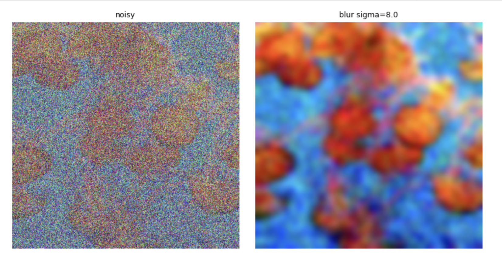
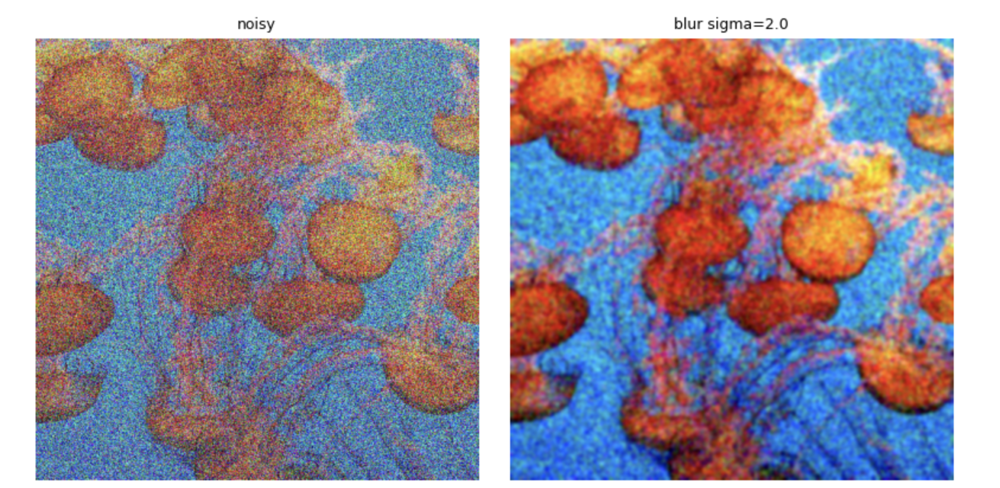
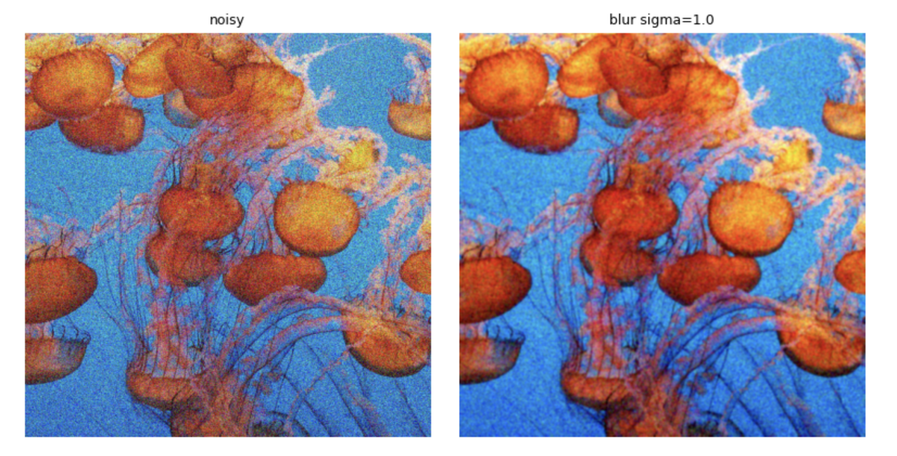
Gaussian blur was able to suppress some of the noise, but the results showed a tradeoff between noise removal and preserving image details. At lower timesteps, stronger smoothing removed noise but also blurred the jellyfish and their tentacles. At higher timesteps, more of the original image structure was already present, making the restoration more successful.
1.3 One-Step Denoising
Next, I used the pretrained flow model to predict the velocity at each noisy image. Instead of applying a Gaussian filter, I estimated the clean image by extrapolating from the current timestep to t = 1:
Here, c is the embedding of the text prompt "a high quality photo." This method requires only one model prediction per image.
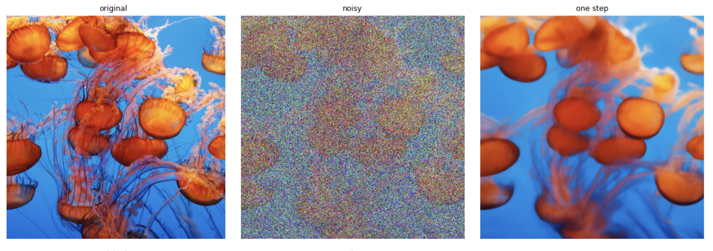
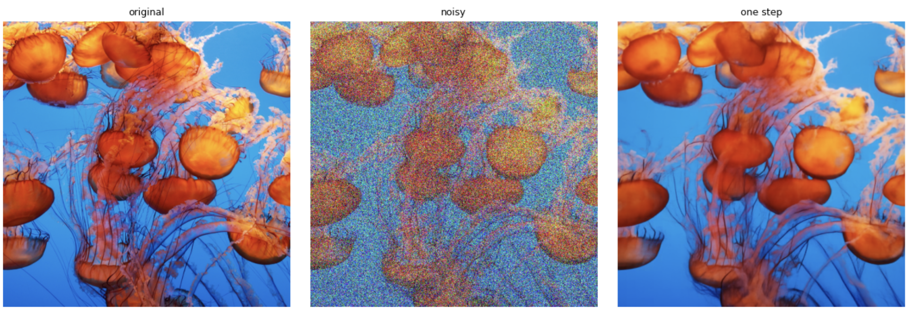
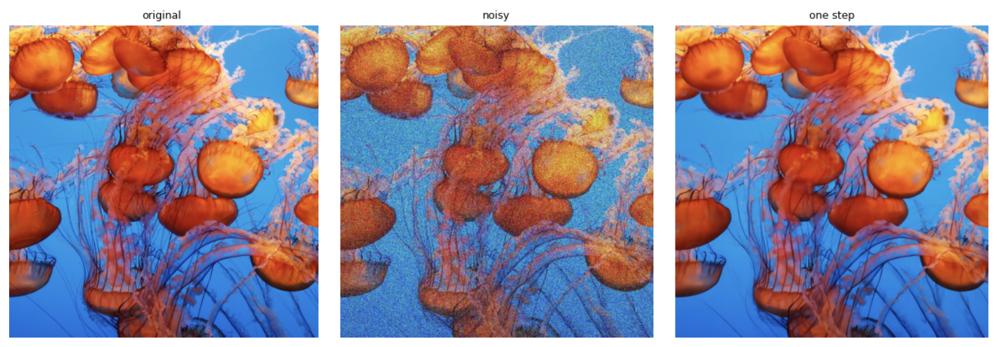
Compared to Gaussian blur, the learned model can use its knowledge of natural images to reconstruct meaningful structures rather than simply averaging neighboring pixels. However, because one-step denoising assumes a single predicted velocity is sufficient to reach the clean endpoint, it can introduce changes to the original image, especially when the starting input contains more noise.
1.4 Visualizing Velocity
To better understand what the flow model predicts, I compared the model's predicted update with the ground-truth update needed to recover the original image.
The ground-truth velocity is vgt = x1 - ε. The two updates are:
Ground truth: (1 - t)vgt
I visualized both updates using a shared symmetric RGB scale, with zero represented by middle gray. I also computed a per-pixel error heatmap using the root-mean-square difference across the RGB channels.
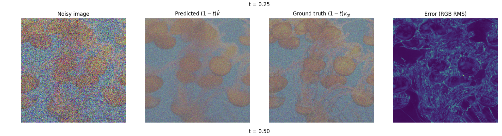
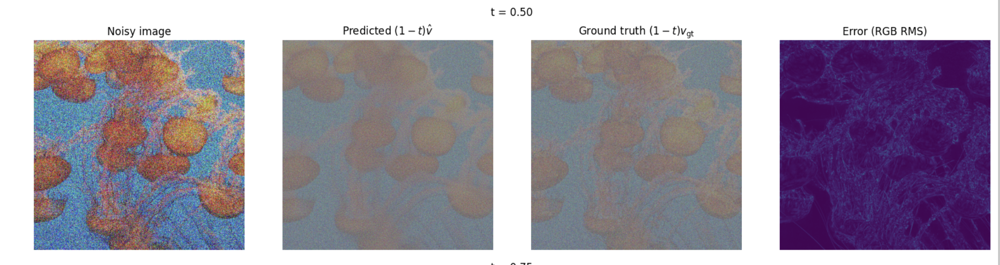
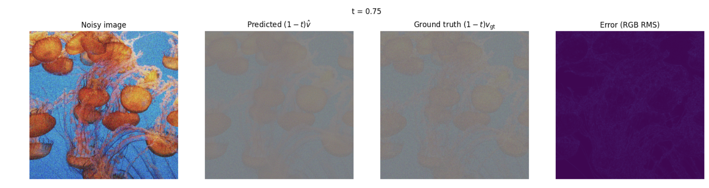
The error heatmaps help identify where the predicted velocity differs from the exact update for this particular noise-image pair. This is useful because the model is trained to predict a velocity field across many possible images, rather than memorize the exact path for one input.
1.5 Iterative Denoising with Euler Sampling
One-step denoising assumes that the velocity remains approximately constant along the path to the clean image. In practice, the model's predicted velocity changes as the image evolves.
I implemented Euler integration to repeatedly update the image and recompute the velocity:
I used a step size of h = 0.02 and started from the noisy jellyfish image at t = 0.50. This required 25 Euler updates to reach t = 1. My implementation also saves intermediate states and shortens the final step when necessary.
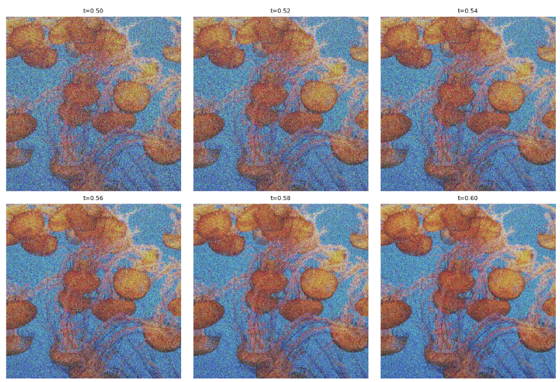
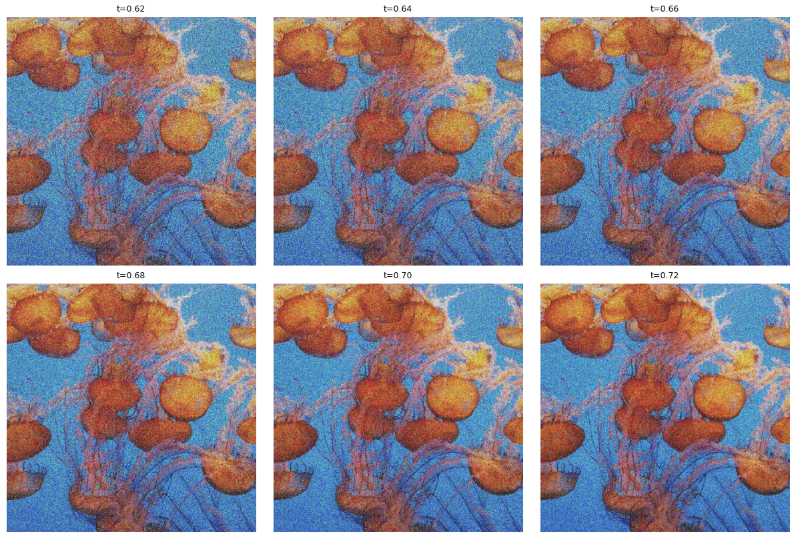
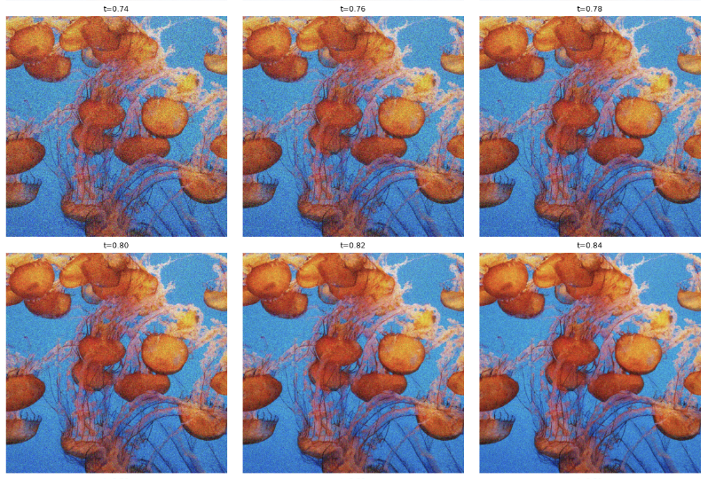
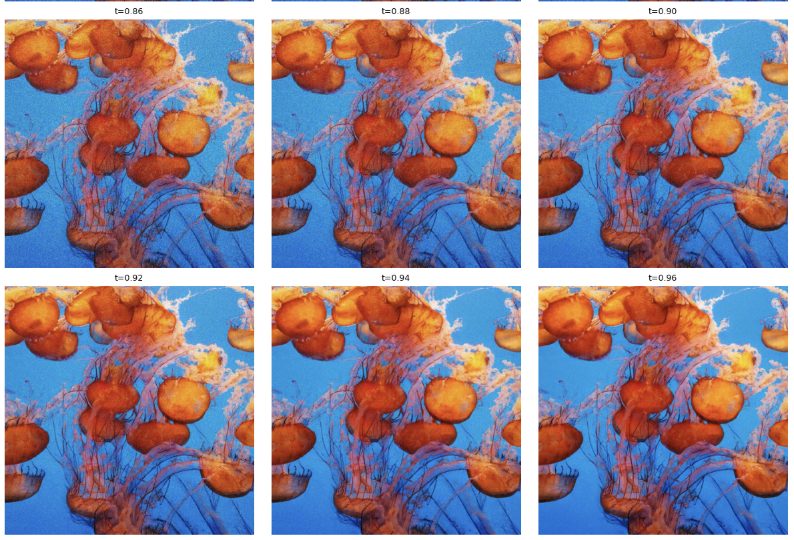
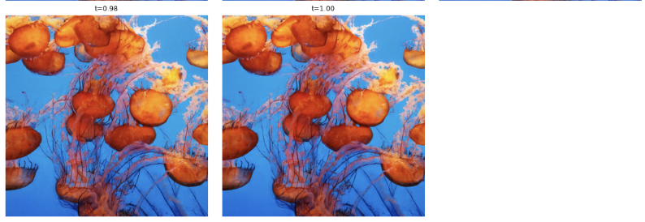
The iterative procedure gradually refines the noisy input as the model repeatedly adjusts its velocity estimate. Unlike one-step extrapolation, each update uses the current intermediate image.
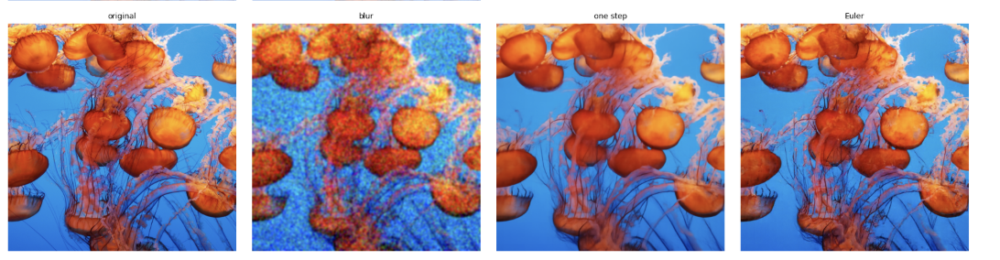
Gaussian blur removes noise through local averaging, while both learned methods use the flow model's predicted velocity. Iterative sampling can better account for changes in the velocity field, although the reconstructed image does not necessarily match the original image exactly.
1.6 Generating Images from Noise
After implementing Euler sampling, I used it to generate images from scratch. Instead of starting with a noisy version of an existing photograph, I initialized the sampler with pure Gaussian noise at t = 0 and integrated to t = 1.
I used the prompt "a high quality photo" and generated images from eight independent seeds, 180 through 187. Each image required 50 Euler updates.
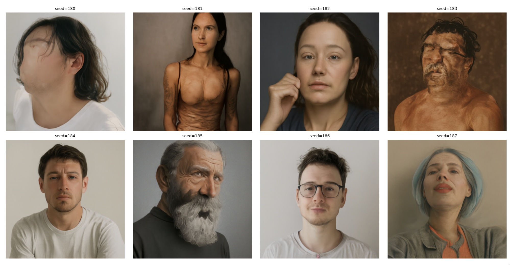
Interestingly, the generic prompt produced mostly portraits of people. Although the prompt did not specify a subject, the model showed a noticeable preference for human faces. The images varied in appearance, pose, and style across different seeds.
2. Conditional Generation and Guidance
2.1 Classifier-Free Guidance
Classifier-free guidance (CFG) is a technique for strengthening the influence of a text prompt during generation. At each timestep, I computed two velocity predictions: one conditioned on the text prompt and another conditioned on an empty prompt.
I then combined the two predictions using:
Here, vc is the conditional velocity, vu is the unconditional velocity, and w controls the strength of guidance. When w = 0, the result is ordinary conditional generation.
I implemented CFG using w = 7 and an Euler step size of 0.02. To make the comparison fair, I reused the same initial noise seeds from Section 1.6.
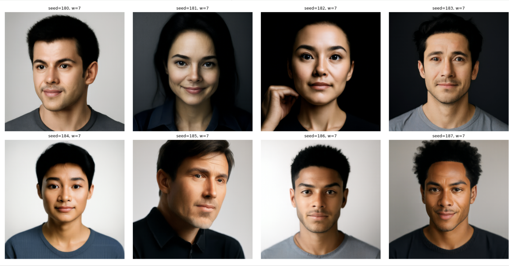
Compared to the unguided samples, the CFG results show more consistent portrait compositions and stronger facial structure. The faces generally appear more centered and clearly defined. However, the outputs also become more similar in composition, illustrating the tradeoff between stronger guidance and sample diversity.
3. Creative Applications
In this section, I used the same flow model and sampling procedure for image editing and optical illusions. All experiments use Euler step size h = 0.02 and CFG weight w = 7.
3.1 Image-to-Image Editing
Image-to-image editing starts with an existing image rather than pure noise. I first interpolate between Gaussian noise and the input image at a chosen starting time:
I then run CFG-guided Euler sampling from tstart to t = 1. This allows the model to generate a new image while retaining some information from the original.
I used the prompt "a high quality photo" and starting times 0.02, 0.04, 0.06, 0.10, 0.14, 0.25, and 0.50.
Campanile
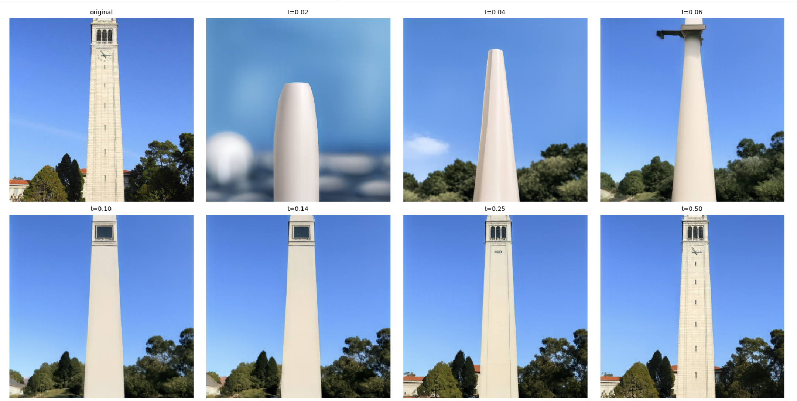
At the smallest starting times, the model completely changes the Campanile, initially generating a rounded white structure instead of the original tower. As the starting time increases, the tower gradually becomes more recognizable. By t = 0.25 and t = 0.50, the model preserves much more of the original architecture, including the windows at the top and the surrounding trees.
My Image 1: Jellyfish
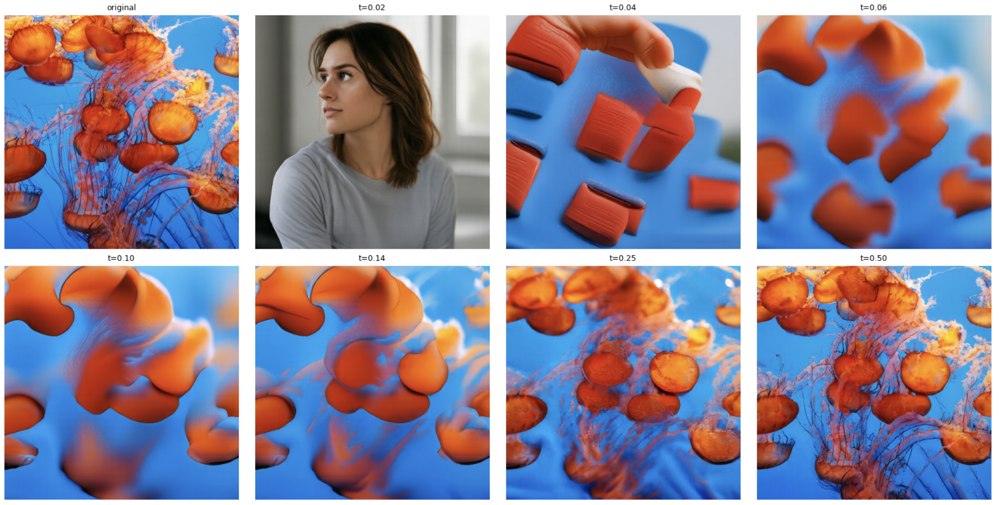
The results for the jellyfish were pretty interesting. At t = 0.02, the model generated a portrait of a woman, completely ignoring the original image. At intermediate starting times, it produced abstract orange and blue shapes that loosely resembled the jellyfish. By t = 0.25 and t = 0.50, the original jellyfish and their tentacles were much more recognizable.
My Image 2: Llama
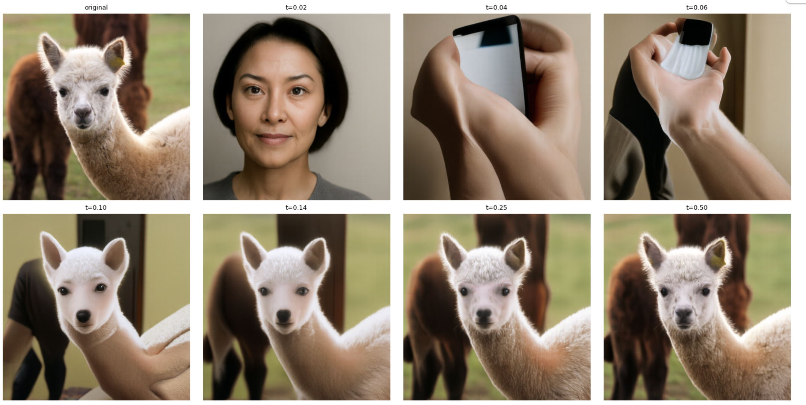
For the second test image, I used a llama image. At t = 0.02, the model generated a human portrait instead of a llama. At t = 0.04 and t = 0.06, it produced images of people holding objects, which were also completely different from the original. Starting around t = 0.10, the llama began to reappear. At larger starting times, its face, ears, and fur became increasingly similar to the original photograph.
Editing an Image from the Web
I also experimented with an image obtained from the web, applying the same seven starting times and generic photo prompt.
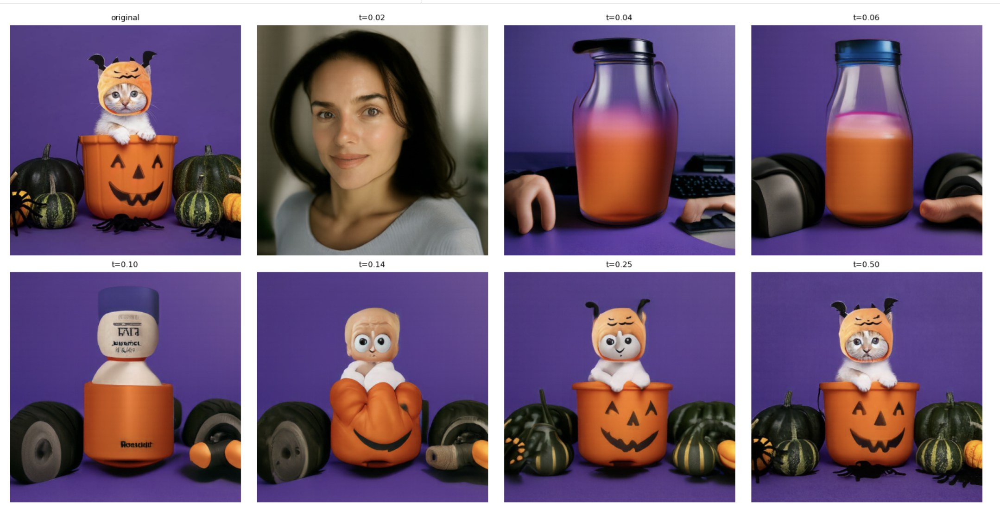
For the web image, I used an illustration of an orange cat sitting inside a jack-o'-lantern. At smaller starting times, the model generated unrelated images, including a portrait and a bottle. As the starting time increased, the orange cat and pumpkin gradually reappeared. By t = 0.25 and t = 0.50, the model preserved most of the original Halloween composition.
Editing Hand-Drawn Images
Finally, I tested the editing procedure on two hand-drawn images. Since drawings are often simpler and less realistic than photographs, this experiment explores how the model interprets basic shapes and colors when generating more natural-looking images.
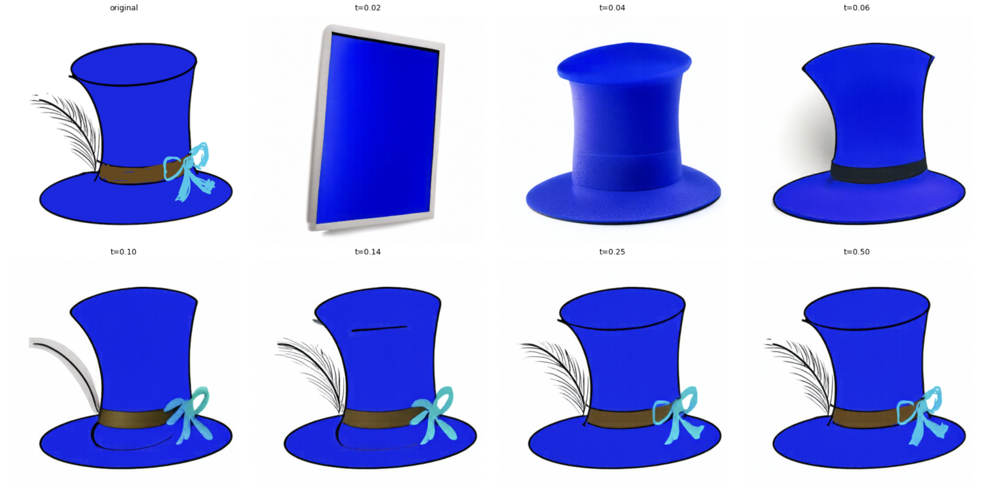
For my first drawing, I used a blue magician's hat with a feather and ribbon. At smaller starting times, the model initially generated a blue rectangular object or a simplified hat without its decorations. As the starting time increased, the feather, ribbon, and original hat shape gradually returned.
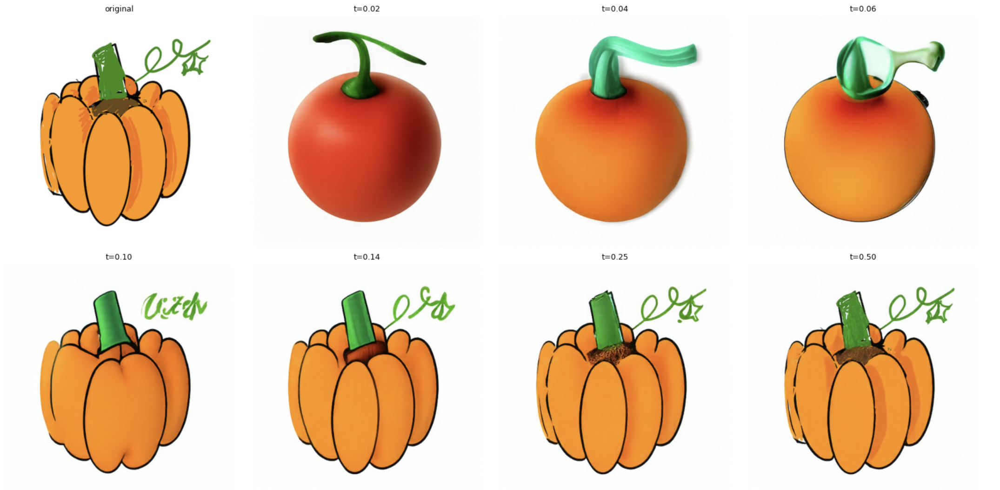
My second drawing was an orange pumpkin with a green stem and vines. At the smallest starting time, the model interpreted it as a tomato. At intermediate times, it generated more realistic orange pumpkins, while the larger starting times preserved the cartoon style and decorative vines of the original drawing.
3.2 Text-Guided Image Editing
Next, I extended image-to-image editing by replacing the generic photo prompt with a more specific text description. The sampling procedure remains the same, but the text prompt encourages the model to modify the input image toward a desired subject.
I used the same three images and the same seven starting times as in Section 3.1.
Campanile
Prompt: a tall birch tree
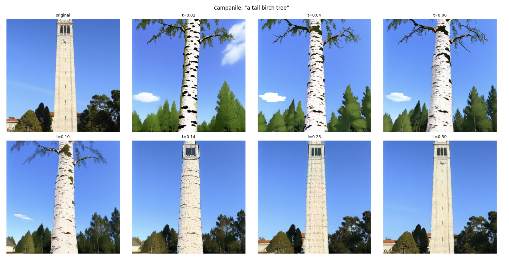
I tried transforming the Campanile into a tall birch tree. At smaller starting times, the model successfully generated a white tree trunk with dark markings and branches at the top. Interestingly, the tall, narrow shape of the Campanile works well for this transformation. At larger starting times, the tower gradually reappears, although some of the tree-like textures remain.
My Image 1: Jellyfish
Prompt: a spotted mushroom in the forest
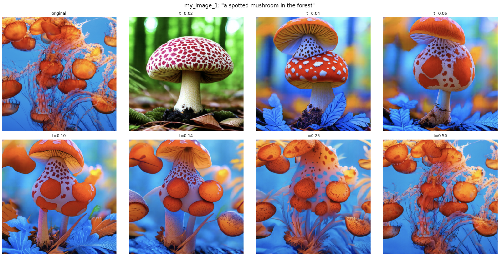
I tried turning the jellyfish into a spotted mushroom. At smaller starting times, the model generated recognizable mushrooms with spotted caps. At intermediate times, the mushroom shapes began blending with the orange and blue underwater scene. I thought this was an interesting result because the rounded jellyfish bodies resemble mushroom caps. At larger starting times, the original jellyfish became more prominent again.
My Image 2: Llama
Prompt: a sitting dragon in a yard
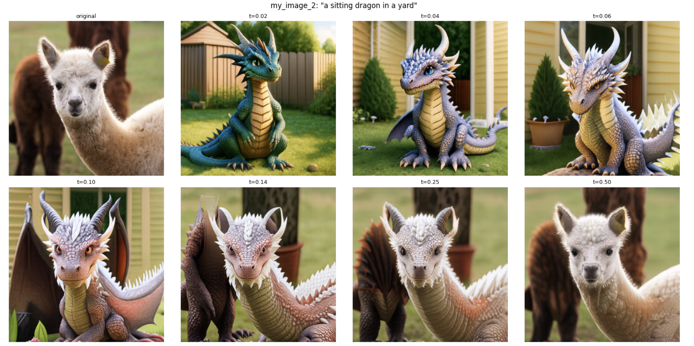
For the llama, I tried generating a sitting dragon in a yard. At smaller starting times, the model produced an entirely different dragon-like creature. At intermediate times, the dragon's head and horns began overlapping with the llama's original body and background. By t = 0.25 and t = 0.50, the image looked much closer to the original llama, with fewer dragon-like features.
Across these experiments, the starting time controls the balance between preserving the original image and following the new text prompt. Smaller starting times generally give the model more freedom, while larger starting times constrain it to remain closer to the original.
3.3 Visual Anagrams
Visual anagrams are images that depict one subject when viewed upright and a different subject when rotated 180 degrees.
To create these illusions, I used two text prompts and computed two CFG velocity predictions at each timestep. For the second prompt, I rotated the current image by 180 degrees before predicting its velocity. I then rotated that prediction back and averaged the two velocities:
v2 = rotate(CFG(rotate(xt), t, c2))
v = (v1 + v2) / 2
I used this combined velocity in the Euler sampling loop, encouraging the generated image to satisfy both prompts under different orientations.
Visual Anagram 1
Upright prompt:
A watercolor painting of a sailboat on the ocean.
Rotated prompt:
A watercolor painting of a snowy mountain.
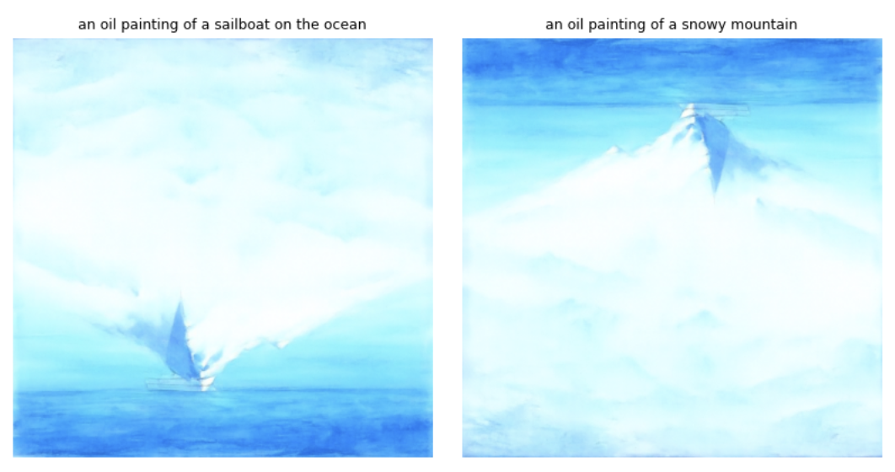
This visual anagram was a little less successful than I expected. In the upright orientation, there is a small sailboat-like shape near the water, but most of the image is dominated by the sky and ocean. When rotated, the same shape becomes a snowy mountain peak, which is more recognizable. I think the model had an easier time satisfying the mountain prompt than the sailboat prompt.
Visual Anagram 2
Upright prompt:
A watercolor painting of a flower.
Rotated prompt:
A watercolor painting of a jellyfish.
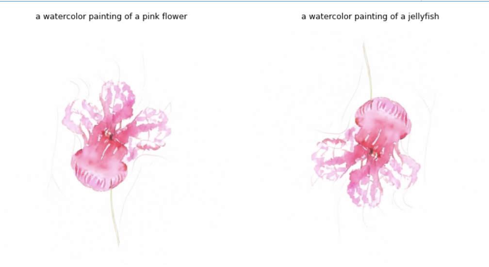
This visual anagram worked much better. In the upright orientation, the pink shapes resemble flower petals around a central bloom, with a thin green stem underneath. When rotated, the same pink structure resembles a jellyfish with a rounded bell and trailing tentacles. I think this pair worked well because flower petals and jellyfish tentacles have similar curved shapes.
This experiment illustrates how a single generated image can be optimized toward multiple visual interpretations by combining velocity predictions from different transformations.
3.4 Hybrid Images
For the final experiment, I created hybrid images that appear to show different subjects depending on viewing distance. This extends the hybrid image idea from Project 2 to flow-based generation.
Instead of combining two finished images, I combined the frequency components of two CFG velocity predictions during each Euler update.
The low-frequency component of the first prediction controls the large-scale image structure, which is more visible from far away. The high-frequency component of the second prediction contributes fine details, which are more noticeable up close.
I used Gaussian low-pass filtering with sigma = 16 and a kernel size of 265 for the 512 × 512 velocity tensors.
Hybrid Image 1
Distant / low-frequency prompt:
A lithograph of a human face.
Close-up / high-frequency prompt:
A lithograph of a tiger's face.
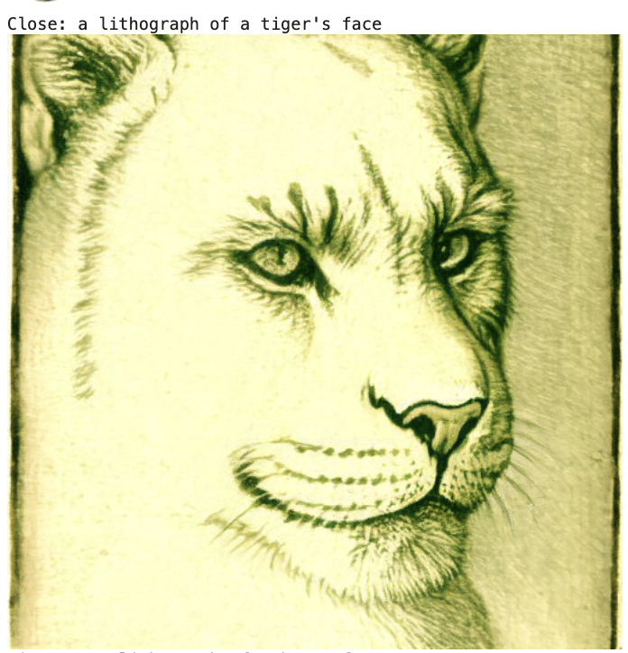
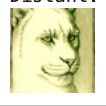
This hybrid did not produce a very strong illusion. The full-size image clearly resembles a tiger's face, with visible whiskers, eyes, and a feline nose. When reduced to 64 by 64 pixels, the image becomes blurrier, but the tiger is still the dominant subject. The human face is not particularly recognizable, suggesting that the tiger prompt had a stronger influence on the result.
Hybrid Image 2
Distant / low-frequency prompt:
A lithograph of a full moon.
Close-up / high-frequency prompt:
A lithograph of an antique clock.
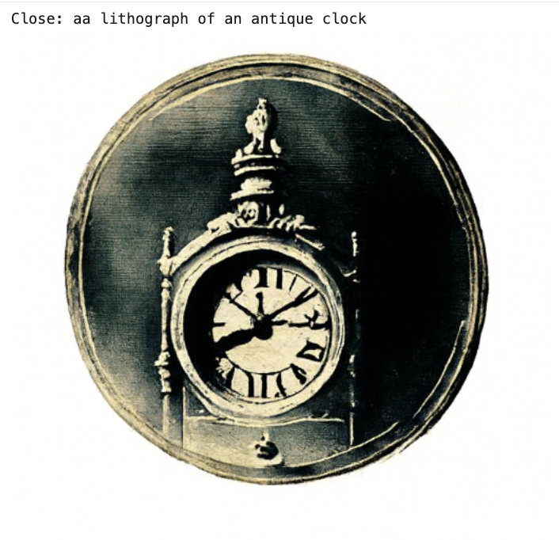
For this hybrid, the full-size image shows a detailed antique clock against a dark circular background. When reduced in size, the clock details become less distinct, but the overall circular structure remains. The result does not clearly turn into a full moon, although the round shape and dark background are consistent with the low-frequency moon prompt.
Unlike traditional hybrid images, where frequency filtering is performed directly on two source photographs, this approach combines frequency information within the model's predicted velocity field. The hybrid structure therefore develops throughout the generation process.
Part A Reflection
This project helped me understand how flow matching connects image generation to numerical integration. By repeatedly following a learned velocity field, the model can transform Gaussian noise into realistic images without explicitly predicting the clean image in a single step.
The denoising experiments demonstrated the differences between classical filtering, one-step model predictions, and iterative sampling. Classifier-free guidance showed how conditional and unconditional velocity estimates can be combined to influence generation.
Finally, the creative applications showed how the same sampling framework can be adapted for image editing, optical illusions, and hybrid images simply by changing the starting state or combining velocity predictions in different ways.
Part B: Flow Matching from Scratch
In Part A, I explored image generation using a pretrained flow model. For Part B, I implemented and trained my own models on the MNIST handwritten-digit dataset. I started with a single-step denoising UNet, then extended it to predict a time-dependent velocity field for iterative image generation. Finally, I added class conditioning and compared models trained with and without a learning-rate scheduler.
1. Training a Single-Step Denoising UNet
1.1 Implementing the UNet
I implemented an unconditional UNet using convolutional, downsampling, and upsampling blocks. The encoder progressively reduces the spatial resolution of the input from 28 × 28 to 7 × 7, while the decoder upsamples the features back to the original resolution. Skip connections concatenate encoder features with decoder features at corresponding resolutions, helping preserve spatial information.
Each convolutional block uses convolution, batch normalization, and GELU activation. At the bottleneck, average pooling reduces the feature representation to 1 × 1, and a transposed convolution restores it to 7 × 7. The final convolution produces a single-channel grayscale image.
1.2 Visualizing the Noising Process
To create noisy training inputs, I added Gaussian noise to clean MNIST images:
I visualized noise levels of 0, 0.2, 0.4, 0.5, 0.6, 0.8, and 1.0. I reused the same Gaussian noise sample across all levels so that the differences came from changing the noise strength rather than the random noise pattern.
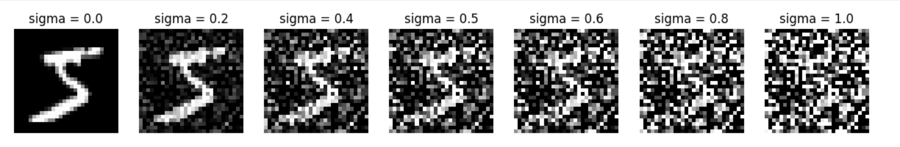
1.2.1 Training the Denoiser
I trained the UNet to reconstruct clean images from noisy inputs using mean squared error (MSE) loss:
I used a fixed training noise level of σ = 0.5, batch size 256, 128 hidden channels, and Adam with a learning rate of 0.0001. The model was trained for five epochs, with fresh Gaussian noise generated for each batch.
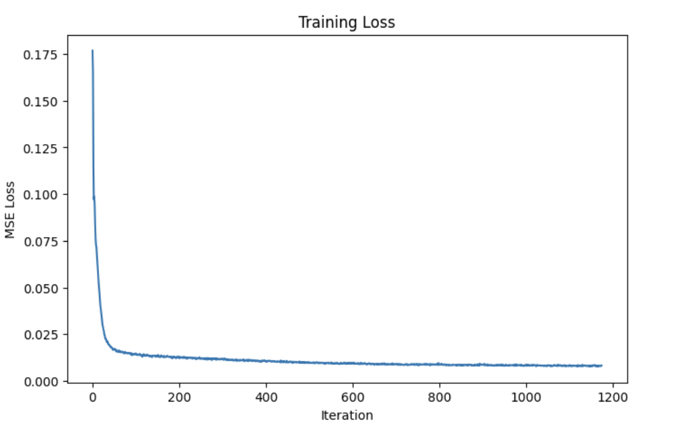
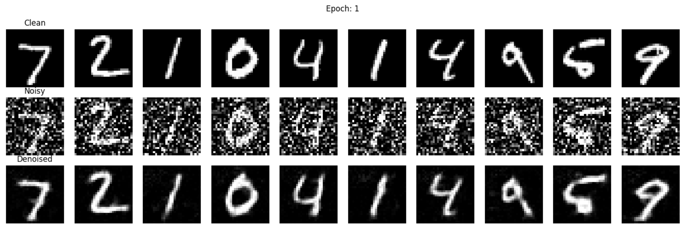
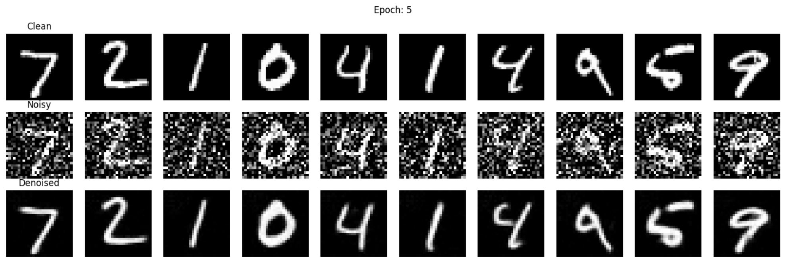
The recorded final-batch loss decreased from approximately 0.0120 after the first epoch to 0.0082 after the fifth epoch. As training progressed, the model became better at suppressing noise while preserving the recognizable structure of the handwritten digits.
1.2.2 Out-of-Distribution Testing
Since the denoiser was trained exclusively at σ = 0.5, I evaluated its performance on other noise levels to understand how well it generalized beyond the training distribution.
For each noise level, I visualized ten MNIST test images in three rows: the original clean images, the noisy inputs, and the model's denoised predictions. I kept the images and underlying noise fixed across different sigma values.
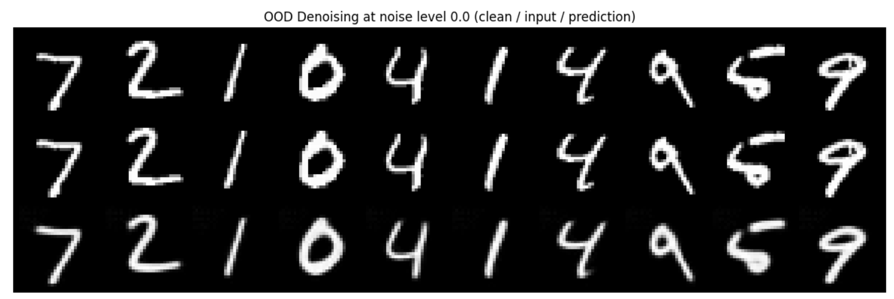
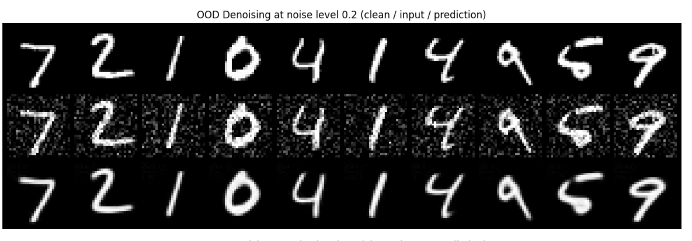
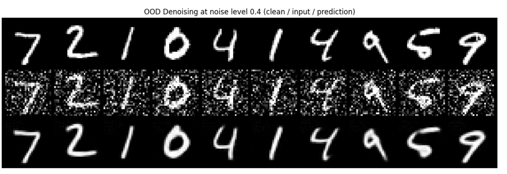
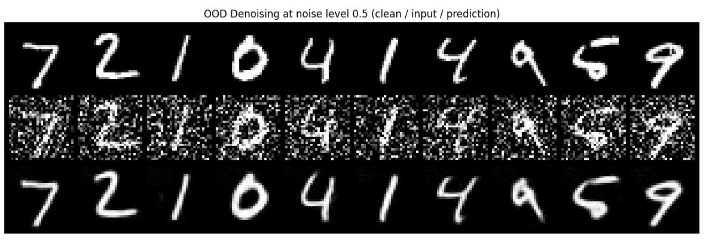
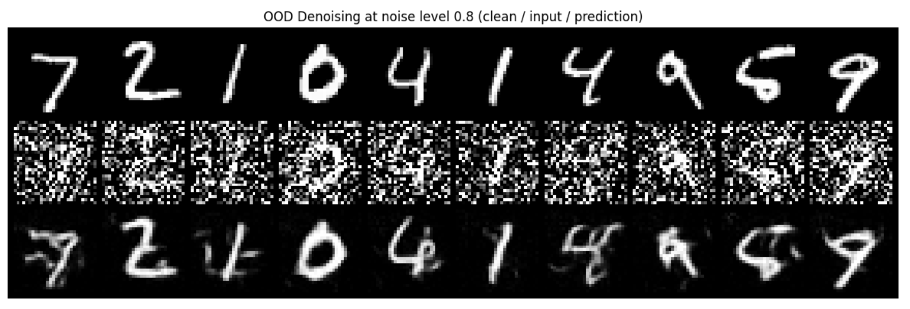
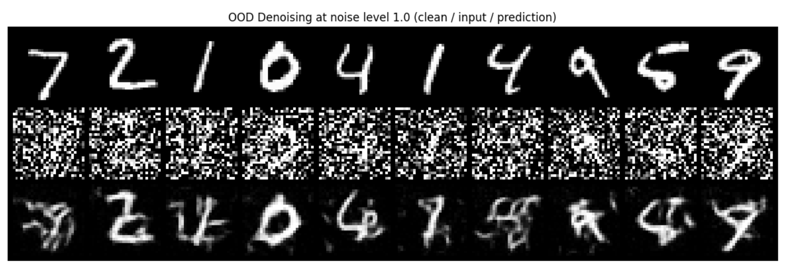
This experiment illustrates the limitations of training a denoiser at only one noise level. When the input contains substantially more noise than the training examples, important digit strokes become obscured, making accurate reconstruction more difficult. At very low noise levels, the model may also modify details that were already present in the clean image.
1.2.3 Denoising Pure Noise
Next, I investigated whether a single-step denoiser could generate digits directly from pure Gaussian noise. I trained a new UNet using random noise as input and independently sampled MNIST digits as targets.
I used five epochs, batch size 256, 128 hidden channels, and Adam with a learning rate of 0.0001.
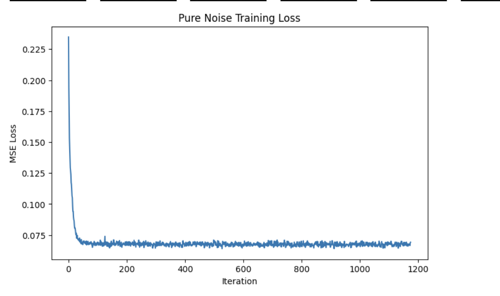
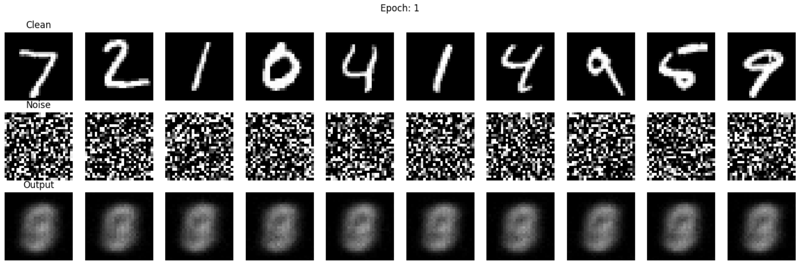
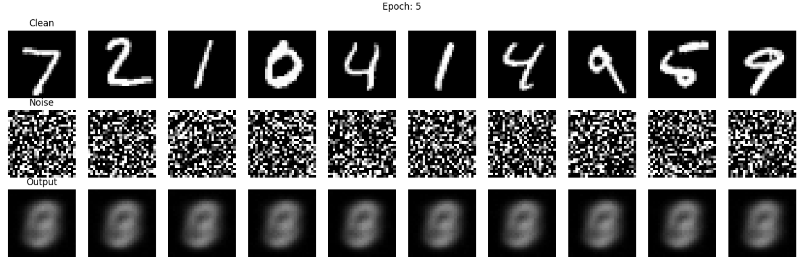
Instead of producing distinct handwritten digits, the model tends to generate blurry, similar-looking shapes. This is because the input noise contains no information about the target digit. When minimizing MSE, the optimal prediction is the conditional mean of the target distribution. Since the noise is independent of the digit, the model learns something resembling an average across many MNIST images.
This explains why single-step denoising from pure noise is insufficient for generating diverse, recognizable digits.
2. Training a Flow Matching Model
To address the limitations of single-step denoising, I implemented flow matching, which learns how to progressively transform Gaussian noise into a clean image. Instead of predicting the final image directly, the network predicts a velocity field that describes how the image should change at each timestep.
Given an initial Gaussian noise sample x0 and a clean image x1, I construct intermediate samples through linear interpolation:
The target velocity along this path is:
The model learns to approximate this velocity by minimizing:
2.1 Adding Time Conditioning to the UNet
I extended the unconditional UNet to incorporate the current timestep. This allows the network to predict different velocities depending on how far the sample has progressed from noise to the clean image.
I implemented fully connected time-embedding blocks, each containing two linear layers with a GELU activation. The resulting embeddings are applied to intermediate decoder features, allowing the model to adapt its predictions based on the current timestep.
2.2 Training the Time-Conditioned UNet
I trained the time-conditioned model for ten epochs with 64 hidden channels, batch size 64, and Adam with an initial learning rate of 0.01. I also used an exponential learning-rate scheduler with decay factor 0.11/10.
The model used 50 discrete timesteps, and I saved checkpoints after epochs 1, 5, and 10 to examine how generation quality changed throughout training.
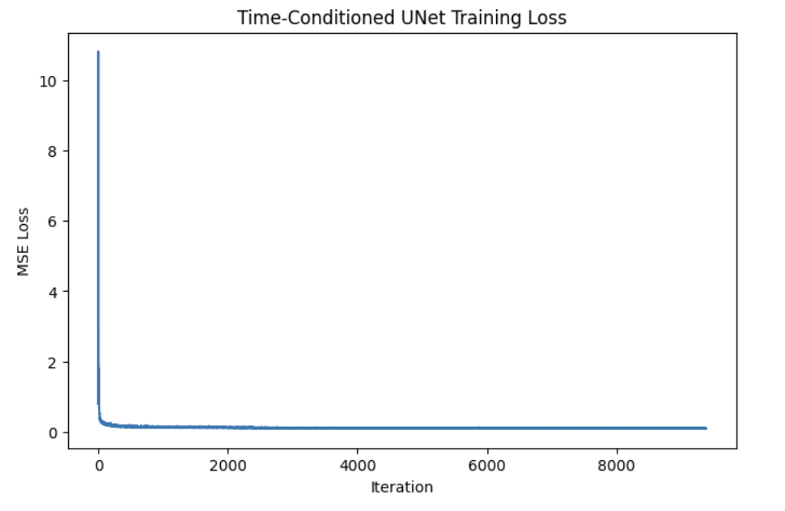
The recorded final-batch MSE decreased from approximately 0.1444 after epoch 1 to 0.0931 after epoch 10. The model learns to predict local changes along the noise-to-image trajectory rather than directly reconstructing the final image from a single noisy input.
2.3 Sampling from the Time-Conditioned UNet
To generate new digits, I started with Gaussian noise and repeatedly applied the learned velocity field using Euler integration:
At each step, the model predicts a velocity from the current image and timestep, which is used to update the image. Repeating this process gradually transforms the initial noise into a digit-like image.
I compared samples from checkpoints at epochs 1, 5, and 10, keeping the random seeds fixed to make the comparison more consistent.
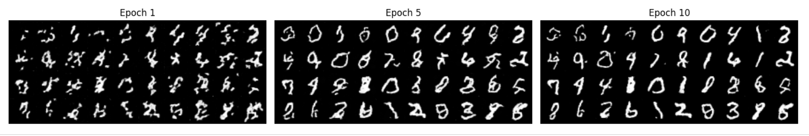
As training progresses, the generated digits generally become more recognizable and structurally coherent. However, because this model is unconditional, there is no way to specify which digit should be generated.
2.4 Implementing Class Conditioning
To control which digit is generated, I extended the time-conditioned UNet to also accept a class label. Each digit label is converted into a ten-dimensional one-hot vector and passed through two fully connected embedding blocks.
The class embeddings scale intermediate decoder features, while the time embeddings are added to these features. This allows the network to incorporate both the desired digit class and the current timestep.
I also implemented class-conditioning dropout with probability 0.1. During training, the class label is occasionally masked, allowing the network to learn both conditional and unconditional velocity predictions.
This enables classifier-free guidance during sampling:
Here, vc is the class-conditioned velocity, vu is the unconditional velocity, and s is the guidance scale. I used s = 5.0 for generation.
2.5 Training the Class-Conditioned UNet
I trained two independent class-conditioned models to compare learning-rate scheduling strategies. Both models used 64 hidden channels, ten epochs, batch size 64, 300 flow steps, and class dropout probability 0.1.
The first model used Adam with an initial learning rate of 0.01 and an exponential scheduler with decay factor 0.11/10. The second model used a constant learning rate of 0.01 without scheduling.
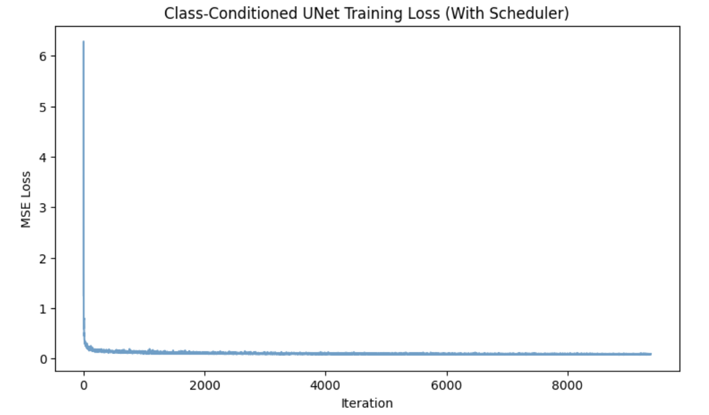
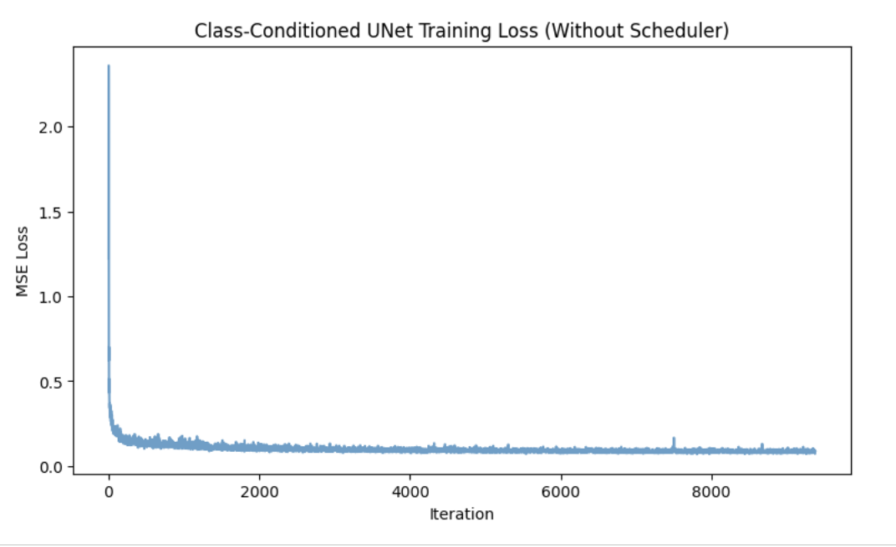
The learning-rate scheduler gradually reduces the step size during training, allowing the model to make smaller parameter updates in later epochs. This can improve optimization stability. In contrast, a constant learning rate maintains larger updates, which can allow continued exploration but may introduce more fluctuations near convergence.
2.6 Class-Conditioned Sampling
I generated four instances of each digit from 0 through 9, producing 40 images for each checkpoint. I used 300 Euler steps and classifier-free guidance with scale 5.0.
I compared the models with and without the learning-rate scheduler at epochs 1, 5, and 10, keeping the random seed fixed across experiments.
Epoch 1
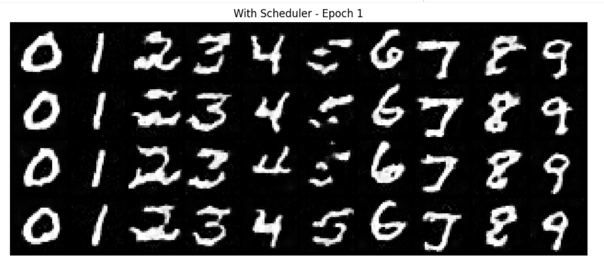
Epoch 5
Epoch 10
The class-conditioned models were able to generate recognizable examples of most digits, even after the first epoch. By epochs 5 and 10, the samples generally looked more consistent with their target classes, although some digits were still distorted or difficult to read.
Both learning-rate strategies produced recognizable digits. The differences between them were not especially dramatic in these samples, so I don't think the scheduler clearly outperformed the constant learning rate based on visual quality alone. The scheduler reduced the learning rate over time, while the constant-rate model continued making larger updates. Overall, both approaches worked reasonably well for this experiment.
Part B Reflection
This part helped me understand why iterative generative modeling is more effective than trying to reconstruct an entire image from pure noise in a single step.
The biggest takeaway from Part B was seeing why generating an image from pure noise is different from denoising an existing image. When I trained the UNet to predict MNIST digits directly from random noise, it mostly produced blurry, average-looking shapes. With flow matching, the model instead learned to make a series of smaller updates, which resulted in much more recognizable digits.
I also found it interesting how much adding class conditioning changed the task. The unconditional model could generate digit-like images, but I couldn't control which digit appeared. With class conditioning and classifier-free guidance, I could generate specific digits and compare how the results changed across training epochs. The scheduler experiment was also useful because both models produced reasonable samples, even though they used different learning-rate strategies.